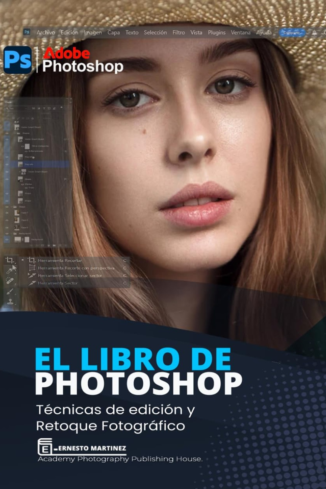
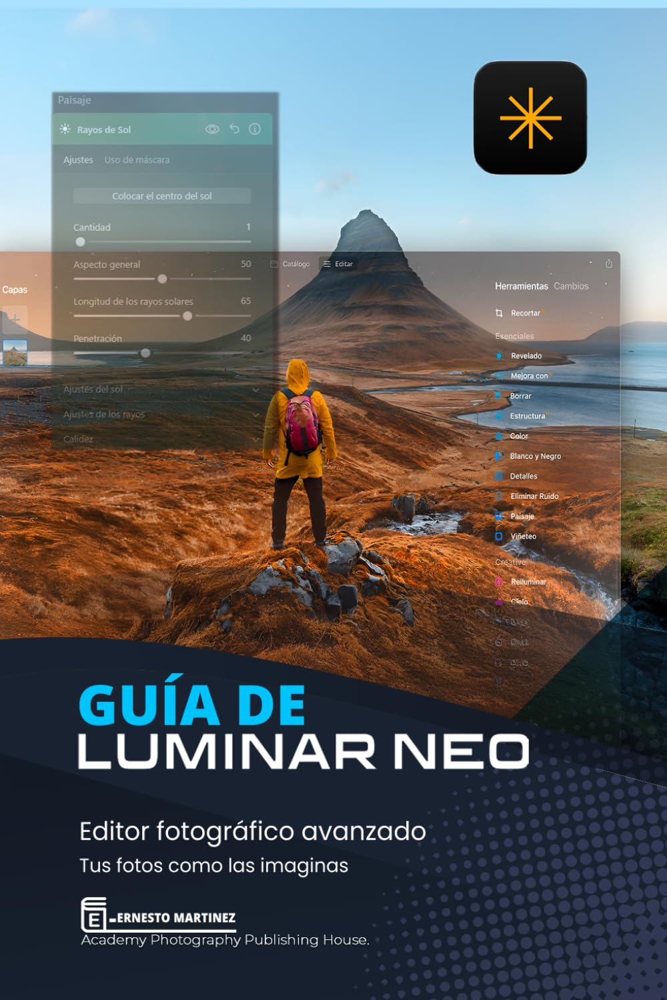
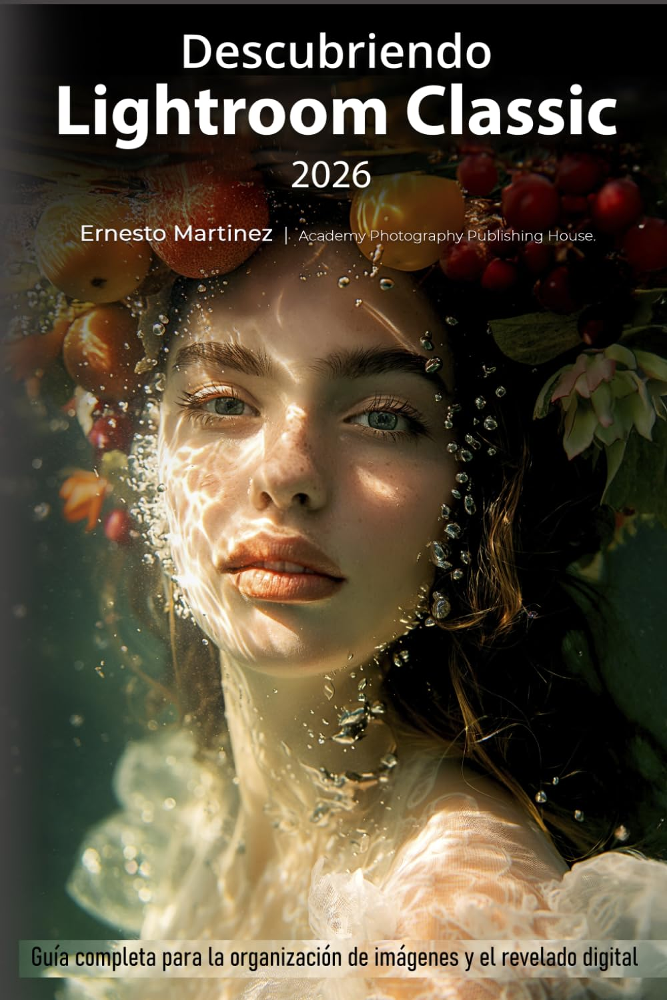
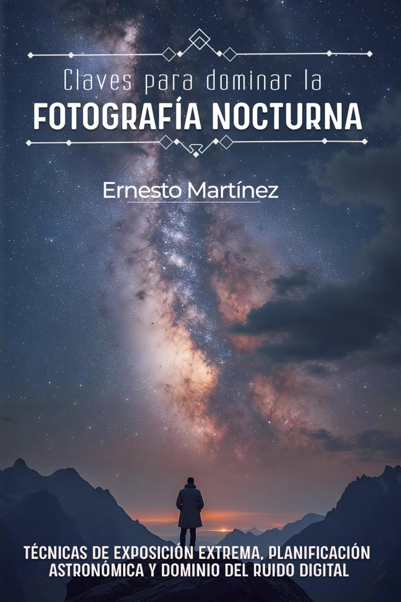

Libros

Último Libro · 2026
El Libro de Photoshop
Domina el estándar de la industria. Esta guía te enseña desde el retoque básico hasta fotomontajes avanzados.

Febrero · 2026
Guía de Luminar Neo
Descubre el poder de la inteligencia artificial. Un manual práctico para potenciar y editar tus fotos.

Diciembre · 2025
Descubriendo Lightroom Classic 2026
Optimiza tu flujo de trabajo. Aprende a organizar, revelar y exportar tus imágenes.

Septiembre · 2025
Claves para dominar la Fotografía Nocturna
Vence a la oscuridad. Aprende técnicas precisas de exposición y composición nocturna.